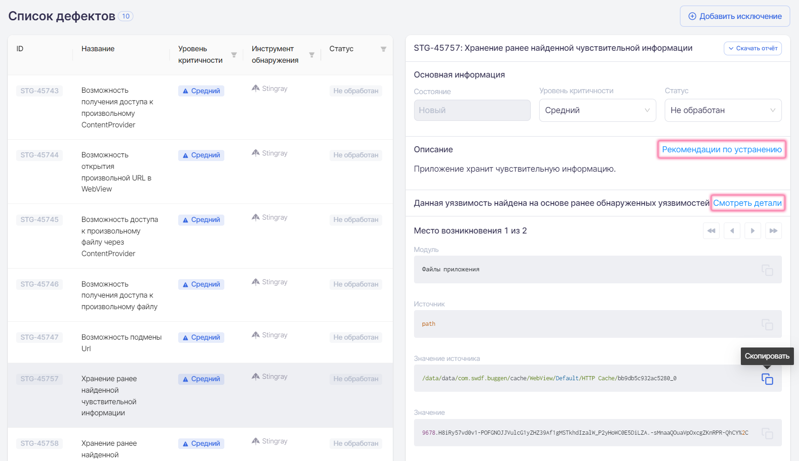

При выборе пункта меню Сканы отображается список всех проведенных сканирований. Каждое сканирование представлено одной строкой. Данные о результатах сканирований автоматически обновляются каждые 10 секунд, что освобождает пользователя от необходимости обновлять страницу вручную.

В списке отображаются сканирования, отсортированные по ID сканирования. В таблице присутствует следующая информация:
ID — внутренний идентификатор сканирования. При нажатии на ID сканирования происходит переход к детальным результатам выбранного сканирования.
Проект — имя проекта, в рамках которого проводилось сканирование. Данное значение представлено в виде ссылки, нажав которую можно перейти в соответствующий проект.
Профиль — профиль сканирования, с которым было проанализировано приложение. Данное значение представлено в виде ссылки, нажав которую можно перейти в соответствующий профиль сканирования.
Имя пакета анализируемого приложения.
Режим — режим сканирования, ручной или автоматический.
Архитектура — тип архитектуры, на которой было проведено сканирование (Android или iOS).
Имя пакета анализируемого приложения.
Состояние — статус сканирования, может принимать несколько значений:
Успешно — сканирование завершилось без ошибок. Если сканирование в целом прошло успешно, но наблюдались сбои в работе отдельных модулей, рядом со статусом отображается значок . При наведении на него курсора появляется более подробная информация о сбоях.
Создан — сканирование создано и помещено в очередь сканирования.
Запускается — сканирование запущено, идет процесс установки и запуска целевого приложения.
Запущен — происходит процесс сканирования.
Анализ — сканирование остановлено, осуществляется процесс анализа собранной информации.
Отменен — сканирование отменено с использованием расположенного справа раскрывающегося меню.
Неуспешно — сканирование завершено с ошибкой. Рядом со статусом отображается значок . При наведении на него курсора появляется более подробная информация об ошибке.
Ожидание повторного анализа — был запущен и еще не завершился повторный анализ результатов сканирования.
Изменен — время последнего изменения статуса сканирования.
Для отображения только необходимых результатов в колонках, отмеченных значком фильтра , предусмотрена установка фильтра. После установки фильтра в колонке цвет значка меняется на синий . При выборе нескольких фильтров они работают вместе, то есть при выборе режима Ручной и состояния Успешно будут найдены и отображены все успешно завершившиеся сканирования с ручным режимом запуска.

Чтобы убрать установленный фильтр, нажмите на значок фильтра и выберите пункт Сбросить в выпадающем меню:

Кроме этого, находясь на данной странице, можно:
Открыть страницу с детальными результатами сканирования.
Скачать PDF-отчет о сканировании.
Инициировать повторный анализ.
Удалить результаты сканирования.
Для выполнения перечисленных действий используйте соответствующие пункты расположенного справа раскрывающегося меню «»:

Результаты сканирования
Чтобы перейти на страницу с детальными результатами сканирования, нажмите либо на строку нужного сканирования в таблице Список сканирований, либо на расположенное справа в строке сканирования раскрывающееся меню «» и выберите пункт Открыть. На открывшейся странице содержится вся информация по анализу приложения: общая информация, выявленные уязвимости, собранные за время работы приложения данные, соответствие стандартам и требованиям. Для выбора доступно три или четыре вкладки в зависимости от режима сканирования: Дефекты, Собранные данные, Стандарты, Запись сканирования. Последняя вкладка присутствует только у сканирований, проведенных в автоматическом режиме.
Общая информация
Общая информация приведена в верхней части страницы с детальными результатами сканирования. Она содержит сведения о проведенном сканировании и краткую информацию о проверенном приложении.

Здесь представлена следующая общая информация по сканированию:
Проект, в рамках которого проводилось сканирование. Данное значение представлено в виде ссылки, нажав которую можно перейти в соответствующий проект.
Профиль, в рамках которого проводилось сканирование. Данное значение представлено в виде ссылки, нажав которую можно перейти в соответствующий профиль сканирования.
Тест-кейс — название используемого тест-кейса. Данное значение представлено в виде ссылки, нажав которую можно перейти на страницу соответствующего тест-кейса. Это поле присутствует только у сканирований, проведенных в автоматическом режиме.
Изменен — дата сканирования.
Состояние — статус проведенного сканирования.
Имя пакета — название пакета приложения в системе.
Тип архитектуры / Архитектура — архитектура сканируемого приложения (Android или iOS).
Версия — название и код версии, указанные в манифесте приложения для более точной идентификации анализируемого приложения.
Target SDK/Min SDK — версии SDK, для которых собрано данное приложение
Размер — размер загруженного файла приложения.
MD5 — хеш-сумма загруженного файла приложения.
Кнопки, расположенные ниже общей информации, позволяют выполнить следующие действия:
Повторный анализ — провести повторный анализ результатов сканирования с применением актуальных правил анализа уязвимостей для данного приложения.
Скачать логи — скачать лог-файл сканирования.
Скачать отчет — получить подробный отчет о результатах сканирования в формате PDF.
На каждую выявленную уязвимость системой заводится дефект. Все найденные во время сканирования дефекты показаны в Списке дефектов в левой половине вкладки Дефекты. В правой части данной вкладки представлена информация о выявленной уязвимости с ее детальным описанием, а также даны рекомендации по ее устранению.

Для удобства работы с дефектами в колонках, отмеченных значком фильтра , существует возможность выбрать и применить для отображаемых дефектов фильтр. Для этого нажмите значок фильтра и выберите из выпадающих списков одно или несколько значений для фильтрации по параметрам Уровень критичности и Инструмент обнаружения. Если выбран уровень критичности Высокий и инструмент обнаружения Stingray, то будут отображаться все обнаруженные системой Stingray дефекты с высоким уровнем критичности. При установке фильтра в колонке цвет значка меняется на синий . Чтобы убрать установленный фильтр, нажмите на значок фильтра и выберите пункт Сбросить в выпадающем меню.
На вкладке Дефекты представлены следующие сведения о дефекте:
ID дефекта в системе.
Название обнаруженной уязвимости.
Уровень критичности дефекта (Критический, Высокий, Средний, Низкий, Инфо).
Инструмент обнаружения — название инструмента, обнаружившего дефект (Stingray, Appscreener, Oversecured).
Статус дефекта (Не обработан, Подтвержден, Ложное срабатывание).
Начальное заполнение значений полей дефектов производится системой автоматически во время анализа результатов.
При нажатии на дефект в Списке дефектов справа отображается детальная информация о нем.

Приводится следующая информация:
ID дефекта в системе.
Название выявленной уязвимости. Рядом с названием располагается кнопка Скачать отчет, нажав которую можно получить отчет об уязвимости в формате PDF.
Состояние дефекта:
Новый — если этот дефект был впервые найден во время этого сканирования, либо он уже встречался ранее, а затем проблема была решена и дефект был закрыт, но при этом сканировании вновь проявился.
Повторный — если этот дефект был уже ранее найден во время предыдущих сканирований.
Исправленный — это состояние для тех дефектов, которые были найдены в предыдущих сканированиях, но в текущем сканировании их уже нет.
Уровень критичности дефекта. В этом поле отображается текущее значение критичности дефекта и предоставляется возможность поменять критичность, выбрав новое значение из выпадающего списка.
Статус дефекта. В этом поле отображается текущий статус дефекта и предоставляется возможность поменять статус, выбрав новое значение из выпадающего списка.
Описание дефекта в краткой форме характеризует найденную уязвимость.
Рядом с Описанием располагается ссылка на Рекомендации по устранению с подробным описанием уязвимости, рекомендациями по исправлению, примерами исходного кода и ссылками на материалы по этой уязвимости.
!!! note "Примечание"
Отдельно следует отметить дефекты, выявленные модулем Поиск ранее найденной чувствительной информации. В поле Описание таких дефектов, кроме упомянутой выше информации, можно найти ссылку Смотреть детали на уязвимости, которые послужили основанием для создания такого дефекта.

Место возникновения дефекта. Если обнаружено несколько уязвимостей одного типа, они группируются в один дефект, а справа от данного поля появляются стрелки , с помощью которых можно переходить между уязвимостями. Ниже приводится важная фактическая информация по найденной уязвимости, например, обнаруженная чувствительная информация, место ее обнаружения, и т. п. Для удобной работы с информацией из этих полей можно использовать расположенную в них справа кнопку Скопировать.
В поле Результат отображается фрагмент кода или содержимое файла (до 5000 знаков), в котором обнаружена уязвимость. Если необходимо загрузить соответствующий файл целиком, нажмите кнопку Скачать результат, расположенную справа.
Если в результате анализа были найдены уязвимости, которые определяются нами как ложные срабатывания, они могут быть добавлены в исключения как на уровне проекта, так и на уровне компании (ко всем проектам компании). Для этого необходимо выбрать один или несколько обнаруженных дефектов, изменить их Статус на «Ложное срабатывание» и нажать кнопку Добавить исключение, расположенную в верхнем правом углу вкладки Дефекты.

В появившемся окне Добавление исключений выберите, на каком уровне вы хотите добавить исключения — на уровне проекта или на уровне компании, а затем нажмите кнопку Добавить.

Также можно добавить исключение для отдельной уязвимости, нажав кнопку Добавить исключение рядом с заголовком Найдено правилом в описании соответствующей уязвимости.

В появившемся окне Добавление исключения выберите, на каком уровне вы хотите добавить исключение — на уровне проекта или на уровне компании, а затем нажмите кнопку Добавить.
В результате добавления исключений, при повторном анализе результатов или при следующем сканировании в рамках этого проекта, если выбран уровень проекта, или для всех проектов компании, если выбран уровень компании, такие уязвимости учитываться не будут.
Собранные данные
Для работы с собранными в ходе сканирования данными выберите вкладку Собранные данные на странице с детальными результатами сканирования.
На вкладке Собранные данные отображается вся информация о работе приложения, собранная за время сканирования. Информация разделена по модулям, которые отвечают за сбор данных. Для модулей предусмотрена возможность скачивания собранных данных в виде zip-архива с помощью кнопки Скачать данные модуля, или же, возможно скачать все данные сканирования сразу в одном архиве с помощью кнопки Скачать все данные.

На данной вкладке доступны данные, собранные во время сканирования приложения всеми включенными в профиле модулями. Модуль для просмотра собранных данных может быть выбран в левой панели Списка собранных данных. Каждый из модулей собирает данные, специфичные только для него. Соответственно, формат представления данных на вкладке отличается для каждого модуля.
На рисунке выше в качестве примера приведены данные, собранные модулем Сетевая активность. В этом случае были собраны данные, переданные по сети — адрес, протокол, время, метод, порт, а также содержание запроса и ответа. Такого сорта дополнительная информация может оказаться полезной в работе с результатами анализа.
На рисунке ниже приведен еще один пример, иллюстрирующий другую область работы приложения — данные, собранные модулем Отслеживание Activity. Здесь Activity — это все различные экраны приложения, которые были запущены во время сканирования. Для каждого экрана (Activity) приведены его имя и параметры запуска.

Результаты работы всех модулей собраны в одной системе, что значительно упрощает их анализ. Такой подход обладает явными преимуществами по сравнению с ситуацией, когда данные о работе приложения последовательно и в различных форматах собираются несколькими утилитами.
Помимо предоставления пользователям возможности работы с собранными данными, система на их основе делает выводы об уязвимостях приложения. Правила анализа собранных данных для поиска уязвимостей подробно описаны в разделах «Правила» и «Правила анализа на уровне Компании».
Стандарты
Для работы с требованиями стандартов выберите на странице с детальными результатами сканирования вкладку Стандарты. На этой вкладке отображаются результаты проверки выполнения требований для просканированного приложения. На вкладке Стандарты представлено соответствие стандартам безопасности, выбранным в профиле сканирования. Требования, категории требований и стандарты, в которых были выявлены несоответствия, отмечаются красным цветом.

Если кликнуть мышкой по невыполненному требованию, отмеченному красным цветом на вкладке в левой части, в правой части на вкладке Дефекты появится список типов дефектов, которые были проверены для выбранного требования.

В случае обнаружения дефектов определенного типа при проверке требования, этот тип дефектов отмечается значком , а само требование считается невыполненным и отмечается красным цветом. Если дефектов определенного типа при проверке требования выявлено не было, такой тип дефектов отмечается значком . Требование в целом считается выполненным, если при его проверке не было выявлено ни одного дефекта из числа относящихся к этому требованию типов дефектов.
При нажатии в области Дефекты на тип дефекта, отмеченного значком , появится окно с детальной информацией по дефектам данного типа:

Для возвращения к списку требований нажмите кнопку в левом верхнем углу.
На вкладке Стандарты доступны данные по выполнению требований всех выбранных в профиле сканирования стандартов. Если в профиле добавить еще один стандарт к списку проверяемых, то после этого при просмотре результатов всех уже ранее проведенных с этим профилем сканирований, на вкладке Стандарты будет отображаться также соответствие ранее собранных результатов и вновь выбранного в профиле стандарта.
Запись сканирования
Данная вкладка доступна только для результатов автоматического сканирования и предоставляет возможность просмотра видеозаписи проведенного сканирования и процесса выполнения тест-кейса.

Снимок экрана
Для сканирований, завершенных со статусом Неуспешно, причиной завершения которых стала невозможность запуска приложения на агенте, в результате сканирования доступна вкладка Снимок экрана, на которой сохранен снимок экрана эмулятора в момент возникновения ошибки.

Лог сканирования
Дополнительная вкладка Лог предоставляет возможность просмотра лога сканирования. Она доступна только во время анализа результатов сканирования.

Search
From here you can search these documents. Enter your search terms below.
 . При наведении на него курсора появляется более подробная информация о сбоях.
. При наведении на него курсора появляется более подробная информация о сбоях. . При наведении на него курсора появляется более подробная информация об ошибке.
. При наведении на него курсора появляется более подробная информация об ошибке. , а само требование считается невыполненным и отмечается красным цветом. Если дефектов определенного типа при проверке требования выявлено не было, такой тип дефектов отмечается значком . Требование в целом считается выполненным, если при его проверке не было выявлено ни одного дефекта из числа относящихся к этому требованию типов дефектов.
, а само требование считается невыполненным и отмечается красным цветом. Если дефектов определенного типа при проверке требования выявлено не было, такой тип дефектов отмечается значком . Требование в целом считается выполненным, если при его проверке не было выявлено ни одного дефекта из числа относящихся к этому требованию типов дефектов. в левом верхнем углу.
в левом верхнем углу.